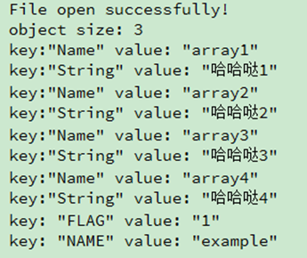
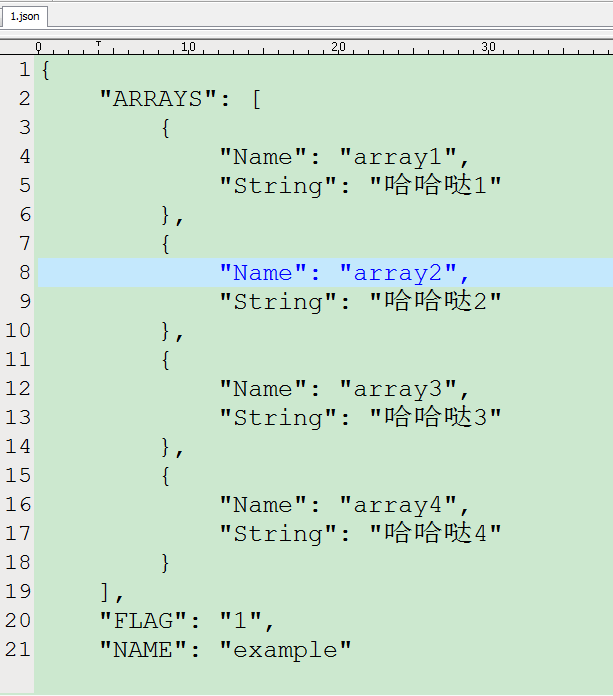

1.解析JSON-示例
注意:JSON中的Key命名不能相同,否则的话会覆盖掉,比如:
{
"FLAG": 1,
"FLAG": "example"
}最终只能读取到FLAG的"example"值.
json文件示例内容如下:
{
"FLAG": 1,
"NAME": "example",
"ARRAYS":
[
{
"Name": "array1",
"String": "哈哈哒1"
},
{
"Name": "array2",
"String": "哈哈哒2"
},
{
"Name": "array3",
"String": "哈哈哒3"
},
{
"Name": "array4",
"String": "哈哈哒4"
}
]
}程序如下:
bool parseJson()
{
//打开文件
QFile file(QApplication::applicationDirPath()+"/1.json");
if(!file.open(QIODevice::ReadOnly)) {
qDebug() << "File open failed!";
} else {
qDebug() <<"File open successfully!";
}
QJsonParseError *error=new QJsonParseError;
QJsonDocument jdc=QJsonDocument::fromJson(file.readAll(),error);
//判断文件是否完整
if(error->error!=QJsonParseError::NoError)
{
qDebug()<<"parseJson:"<<error->errorString();
return false;
}
QJsonObject obj = jdc.object(); //获取对象
qDebug() <<"object size:"<<obj.size();
QStringList list = obj.keys();
foreach (QString key, list) {
if(obj[key].isString())
{
qDebug()<<"key:"<<key<<"value:"<<obj[key].toString();
}
else if(obj[key].isArray() && key =="ARRAYS")
{
QJsonArray arr = obj[key].toArray();
for(int i=0;i<arr.count();i++)
{
QJsonObject arrObj= arr[i].toObject();
qDebug()<<"key:\"Name\""<<"value:"<<arrObj["Name"].toString();
qDebug()<<"key:\"String\""<<"value:"<<arrObj["String"].toString();
}
}
}
return true;
}打印如下:

写JSON-示例
代码如下:
bool writeJson()
{
//打开文件
QFile file(QApplication::applicationDirPath()+"/1.json");
if(!file.open(QIODevice::WriteOnly)) {
qDebug() << "File open failed!";
} else {
qDebug() <<"File open successfully!";
}
QJsonDocument jdoc;
QJsonObject obj;
QJsonArray arr;
for(int i=1;i<5;i++)
{
QJsonObject Member; //定义数组成员
Member["Name"] = QString("array%1").arg(i);
Member["String"] = QString("哈哈哒%1").arg(i);
arr.append(Member);
}
obj["ARRAYS"] = arr;
obj["NAME"] ="example";
obj["FLAG"] ="1";
jdoc.setObject(obj);
file.write(jdoc.toJson(QJsonDocument::Indented)); //Indented:表示自动添加/n回车符
file.close();
}文件保存如下:
